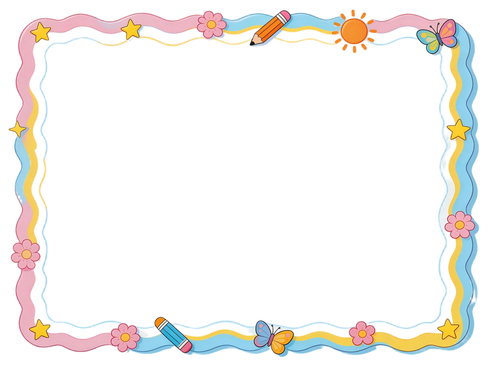

让我们一起来检验学习成果吧！
每题2分，认真思考后选择答案，完成后点击提交查看结果。
请根据自己的学习情况，为每个学习目标打星评价。
1. 掌握把一个大问题分解成小问题的方法
2. 通过复现解决小问题的方案来解决大问题
完成测试并获得满分12分，且自我评价达到五星，即可生成专属证书！
📋 请先完成上面的测试和自我评价
✅ 测试得分：0 / 12分
⭐ 自评星级：未评价

同学：
在《第24课 多人过河巧安排》的学习中
表现优异，成绩突出
掌握了问题分解的方法
特发此证，以资鼓励！
💡 提示：如需完整版证书，请使用截图功能（Ctrl+Shift+X）